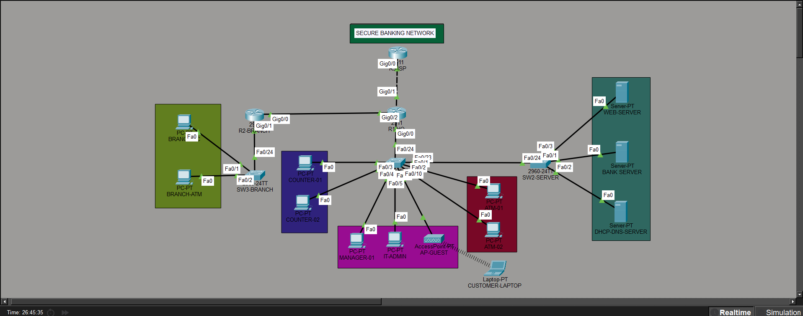

NETWORK INFRASTRUCTURE MONITORING
Secure Banking
Network
A project-data view of the head office, branch office, segmented networks, and documented WAN connections.
LIVE PROJECT INVENTORY
Network overview
Connected sites
Device and router information parsed from the project exports.
NETWORK MAP
Topology & connectivity

NETWORK CONFIGURATION SUMMARY
Banking server infrastructure
Loading server information…
NETWORK CONTROLS
Security configuration
Verified means configuration and test evidence passed. Not Configured means the configuration is absent. Verification Failed means evidence is incomplete or a check failed.
Loading security information…
ADDRESSING PLAN
IP addressing & gateways
| VLAN | Department | Network | Gateway | |
|---|---|---|---|---|
Loading VLAN information…
WAN & INTER-SITE CONNECTIVITY
Routing information
Loading WAN configuration from project exports…
PROJECT DOCUMENTATION & RESOURCES
Project information
PROJECT PROFILE
Loading project profile…
- Simulation
- Cisco Packet Tracer 9.0
- Frontend
- HTML, CSS and JavaScript
- Backend
- Node.js and Express.js
- Sites
- Loading site inventory…
Project source files
Open the original overview, addressing plan, and test report; device exports are listed as inventory sources.
- Loading project source files…
Live API checks
Checks retrieve current project data and backend health.
Ready to check the project API.